Sobhan Gallery
Artists
55 artists and 907 artworks, with each artist’s statement, works and history of experience.
A
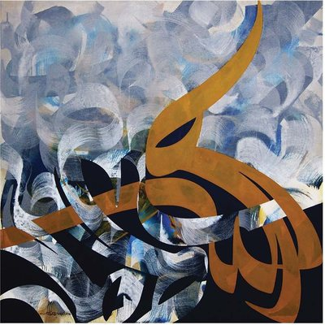
Abbas Seyfabadi
6 works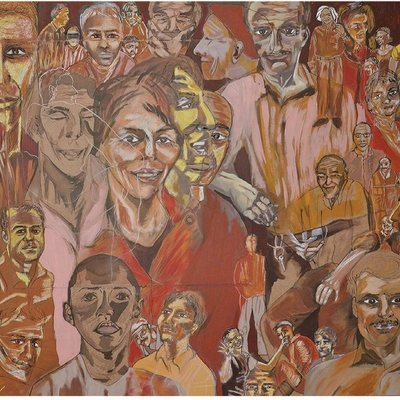
Afsaneh Khojasteh
8 works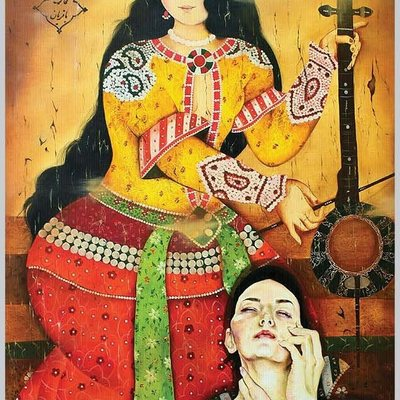
Alemeh Bagherian
14 works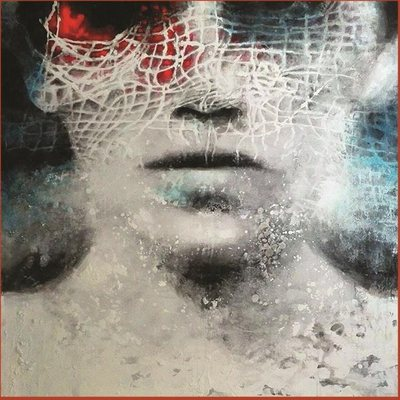
Alireza Zarif
19 works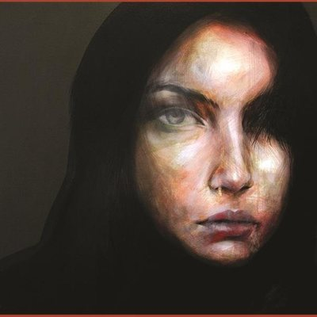
Amin Rostamizadeh
10 works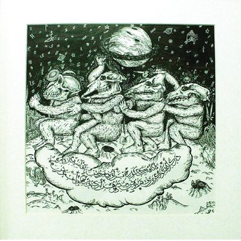
Amir Hosein Akbari
17 works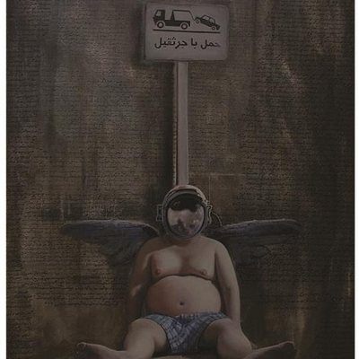
Amirhosein Amirjalali
10 works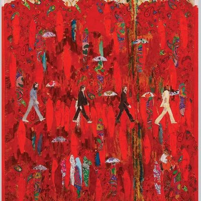
Aneh Mohammad Tatari
33 works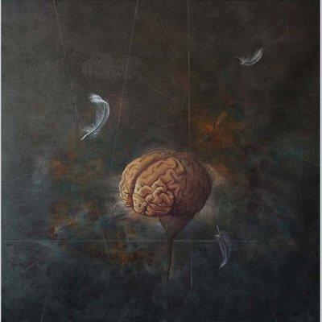
Arash Alimohammadi
10 works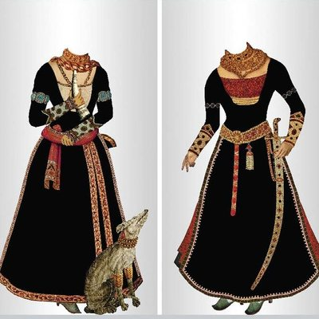
Arash Nazari
10 works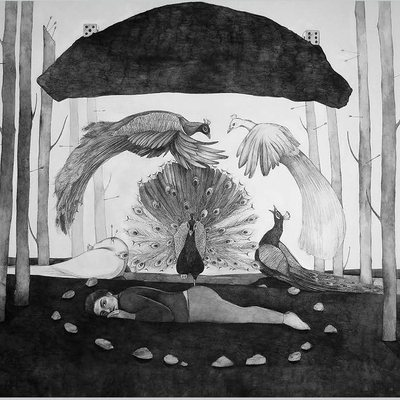
Asal Fallah
21 works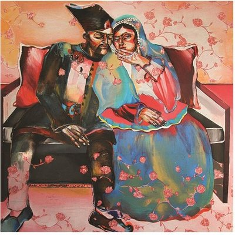
Azadeh Etebarian
15 works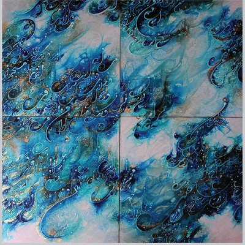
Azim Fallah
14 works
B
H
M
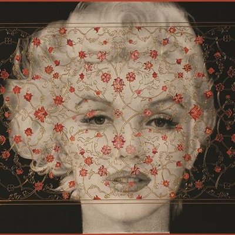
Mahmood Sabzi
9 works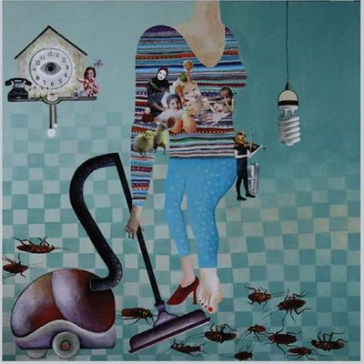
Mahsa Karimi
21 works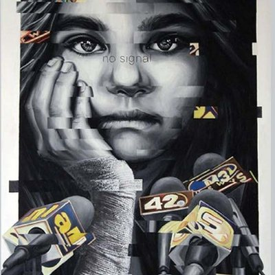
Maryam Namin
9 works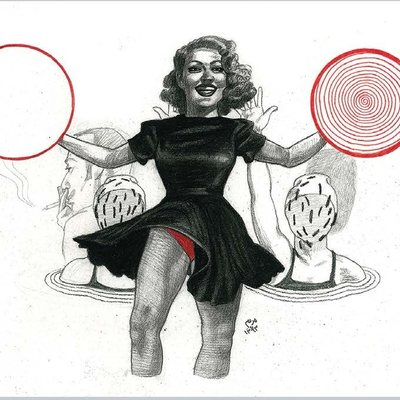
Maryam Sabbaghpour
9 works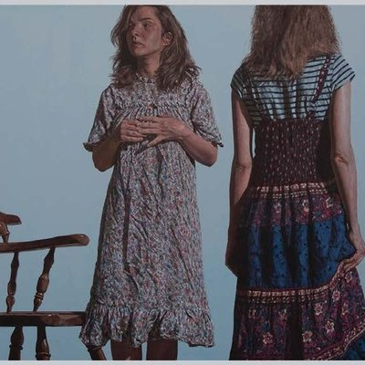
Masoud Keshmiri
12 works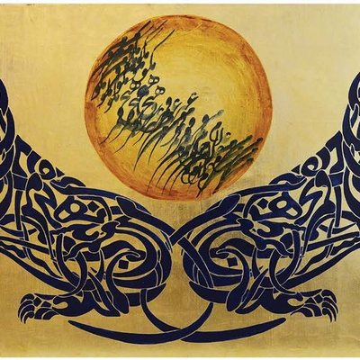
Mehrdad Fallah
7 works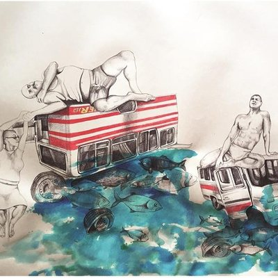
Mina Mohseni
10 works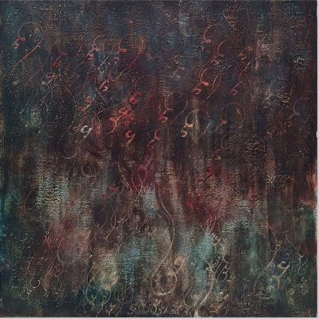
Mohsen Rahbari
13 works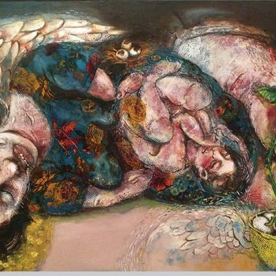
Mojgan Najafi
7 works
N
R
S
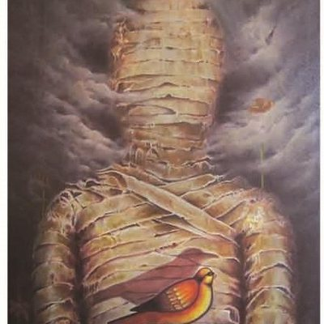
Saeed Emkani
7 works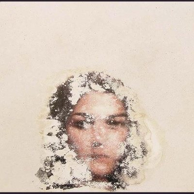
Saeed Rafiee Monfared
7 works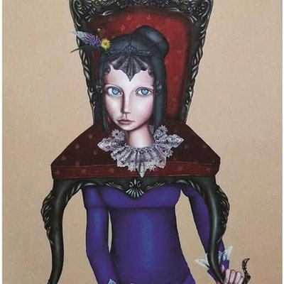
Sara Ashrafi
6 works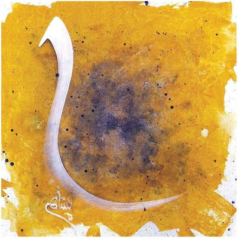
Sepideh Ashrafi
9 works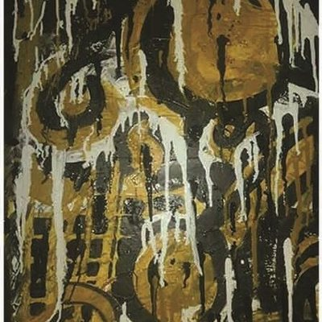
Shayan Shaaban
10 works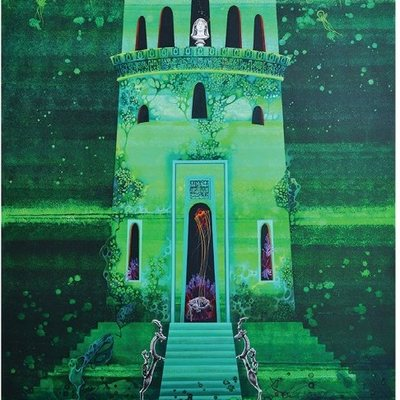
Sheyma Khashkhashi
11 works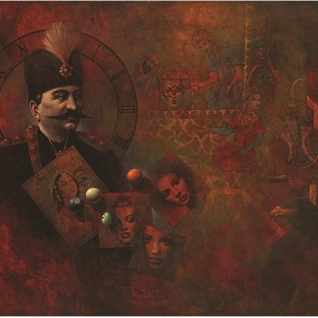
Siamak Azmi
11 works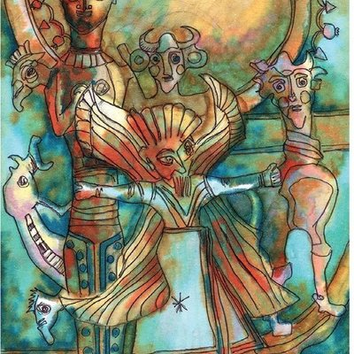
Sousan Ettehad
9 works- Susan Sharifi
24 works
No artist matches that filter.